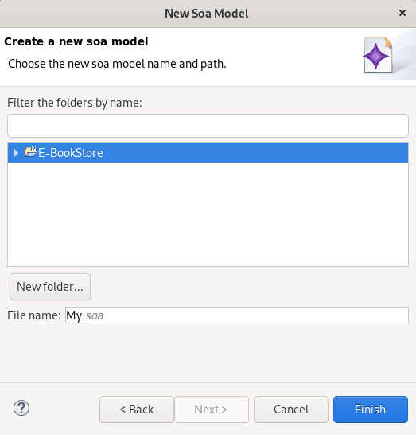
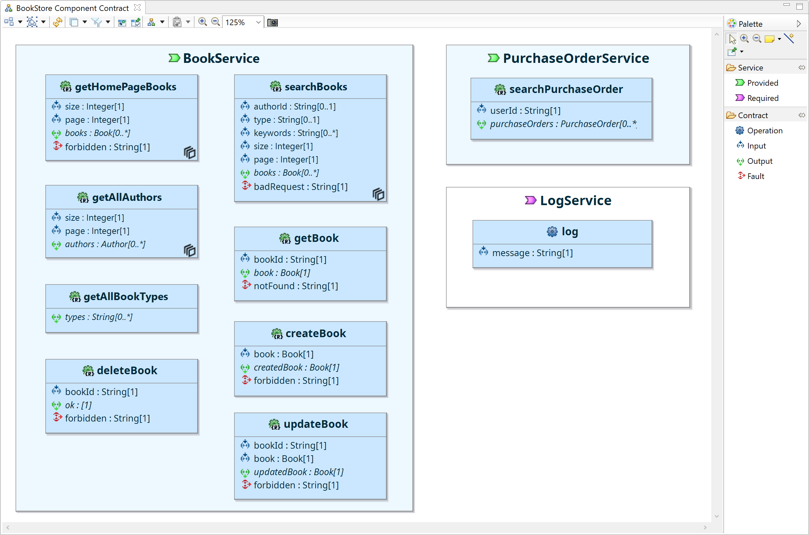
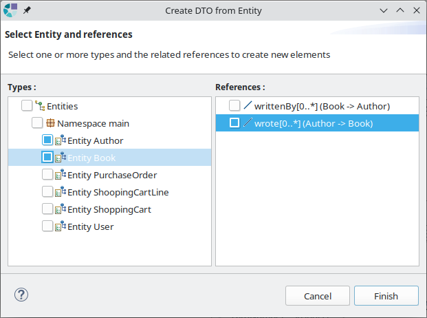
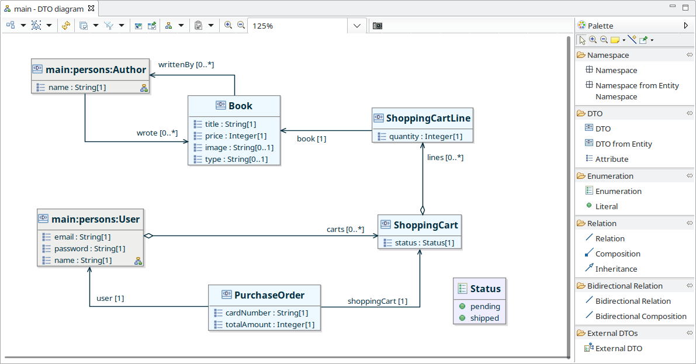

Copyright © 2008, 2020 Obeo - All rights reserved. This program and the accompanying materials are made available under the terms of the Eclipse Public License v1.0
Authors Stéphane Thibaudeau, Vincent Richard
Contacts stephane.thibaudeau@obeo.fr, vincent.richard@obeo.fr
SOA Designer permet de modéliser des composants métiers, avec leurs services et les structure de données qu’ils manipulent (Data Transfer Objects).
SOA Designer apporte le point de vue SOA Views qui permet de :
Un assistant permet la création de modèles SOA. Cet assistant est accessible via le menu :
File > New > Other ... > SOA Model (Catégorie IS Designer) :
Cet assistant permet de définir

Une fois l’assistant validé, un modèle vide est créé, et les représentations
SOA Diagram,
DTO Namespaces Hierarchy et
DTO Physical Names sont créées.
Les représentations
SOA Diagram et
DTO Namespaces Hierarchy sont ouvertes afin de commencer l'édition :

Lorsqu’un modèle soa est créé à l’aide de ce wizard, les points de vues SOA Views, SOA (Safr@n Consolidated view) et Environment View sont activés.
Le point de vue SOA Views fourni par SOA Designer est dédié à la modélisation des composants métier. Il permet de visualiser et modifier un modèle SOA au travers de différents types de diagrammes et vues de propriétés.
L’ouverture d’une session de travail sur un modèle SOA se fait par l’une des manières classiques à un Modeling Project :
L’ouverture de l’assistant
Viewpoints Selection permet de vérifier que le point de vue
SOA Views est bien activé.
Cet assistant est accessible dans le menu contextuel du
Modeling Project sous l’entrée de menu :
Viewpoint Selection

Une fois le point de vue SOA Views activé il est possible de créer ou visualiser les diagrammes SOA Views.
Chaque type de diagramme est rattaché à un concept SOA précis. Par exemple, un DTO Diagram est rattaché à un Namespace.
Pour créer un diagramme d’un certain type, sélectionner l'élément du modèle auquel rattacher le diagramme dans la vue Model Explorer puis, avec un clic droit, sélectionner le menu :
New... > #Nom du diagramme#
Renseigner le nom du diagramme et valider.
Par exemple sur l'élément racine Components, deux types de représentation peuvent être créés comme le montre la capture d'écran suivante :

Une fois créé, le diagramme apparaît dans l’arbre de la vue Model Explorer sous l'élément sur lequel il a été créé, et l'éditeur de diagramme est ouvert prêt à modéliser.
Si il est fermé, un diagramme peut être ouvert en double-cliquant sur le noeud correspondant dans la vue Model Explorer.
Attention, bien qu’ils continuent d’exister et qu’ils soient bien sauvegardés, les diagrammes des points de vues non activés sont filtrés de la vue Model Explorer. Celle-ci ne présente que les diagrammes des points de vue activés sur le Modeling Project.
Le
SOA Diagram offre une vue de haut niveau sur un modèle SOA, il peut être créé sur l’objet racine
Components.
Il permet de modéliser les composants métiers, les services qu’ils fournissent, les services qu’ils requièrent ainsi que des liens entre les composants. Ces liens créés entre services requis et services fournis expriment qu’un service fourni par un composant réponds à un besoin de service requis par un autre composant.

Le diagramme permet d’afficher et manipuler les éléments suivants :
Les outils fournis par la palette sont :

|
Création d’un composant métier. |

|
Création d’un service métier fourni par un composant. |

|
Création d’un service métier requis par un composant. |

|
Création d’un lien depuis un service requis vers un service fourni. Permet d’indiquer quel composant fournit les services nécessaires au fonctionnement d’un autre composant. |

|
Ajout d’un composant externe sur le diagramme. Permet de faire apparaitre un composant défini dans un autre modèle SOA pour créer des relations avec les composants affichés. Cet outil est disponible par l’activation du calque External Components |
Il est possible de naviguer depuis ce diagramme vers un diagramme Component Contract (décrit ci-après) par l’une des actions suivantes :
Le Component Contract Diagram permet de modéliser le détail d’un Component, il peut être créé sur un Component.
Il permet de modéliser :

Le diagramme permet d’afficher et manipuler les éléments suivants :
Les outils fournis par la palette sont :

|
Création d’un service métier fourni par un composant. |

|
Création d’un service métier requis par un composant. |

|
Création d’une opération d’un service. |

|
Création d’un paramètre d’entrée d’une opération. |

|
Création d’un paramètre de sortie d’une opération. |

|
Création d’un cas d’erreur d’une opération. |
Les DTO sont organisés en Namespaces (autrement appelés packages).
Le diagramme DTO Namespaces Hierarchy est destiné à gérer l’ensemble de cette hierarchie de Namespaces et peut être créé sur l’objet racine Components.
Il permet de créer, modifier ou supprimer des packages ainsi que d’accéder facilement (par double clic ou menu contextuel sur les Namespaces) aux diagrammes de DTOs d’un package.

Le diagramme permet d’afficher et manipuler les éléments suivants :
Les outils fournis par la palette sont :

|
Création d’un Namespace. Un Namespace peut être créé sur le fond du diagramme ou à l’intérieur d’un autre Namespace. |
Il est possible de naviguer depuis ce diagramme vers des diagrammes DTO Diagram par l’une des actions suivantes :
Un diagramme de DTOs ( DTO Diagram) permet de gérer les DTOs d’un Namespace, il peut être créé sur un Namespace.

Le diagramme permet d’afficher et manipuler les éléments suivants :
Les outils fournis par la palette sont :

|
Création d’un sous-_Namespace_. |

|
Création d’un DTO. |

|
Création de DTOs à partir d’entités (cf. description ci-dessous). |

|
Création d’un attribut de DTO. |

|
Création d’une énumération. |

|
Création d’une valeur d'énumération. |

|
Création d’une relation simple. |

|
Création d’une relation de composition. |

|
Création d’un lien d’héritage. |

|
Création d’une relation simple bidirectionnelle. |

|
Création d’une relation de contenance bidirectionnelle. |

|
Ajout d’un DTO externe au Namespace courant. Permet de faire figurer sur le DTO Diagram un DTO défini dans un autre Namespace, donnant la possibilité de créer des relations inter-_Namsepace_. Cet outil est activable via le calque External DTOs |
L’outil de création de DTOs à partir d’entités permet de créer un modèle de DTO conformément à tout ou partie d’un modèle d’entités (voir Obeo Network – Entity Designer ).
Cet outil affiche la boîte de dialogue suivante permettant la sélection des entités et relations à prendre en compte :

La validation de cette sélection déclenche la création d’autant de DTO et de Relations qui avaient été sélectionnés.
En plus des outils définis par la palette, l’outil de drag and drop permet de déplacer un DTO d’un namespace à un autre.
Le drag and drop depuis le
Model Explorer d’un
DTO d’un autre
Namespace que le
Namespace sur lequel est défini le
DTO Diagram a pour effet de déplacer le
DTO depuis son
Namespace d’origine dans le namespace du diagramme.
Le
DTO ainsi déplacé reste référencé là où il l'était, comme par exemple en type de paramètre d’une opération SOA ou en référence sur une
Relation. Si le calque
External DTOs est activé, alors les
DTO externes figurent sur le diagramme avec une couleur différente et un label représentant leur nom qualifié :

La gestion des exigences pour un modèle SOA utilise le mécanisme transverse de gestion des exigences. Pour plus de détails, voir Obeo Network – Requirements Tooling .
Il est possible d’attacher de la documentation aux éléments d’un modèle SOA. Le mécanisme utilisé est le mécanisme transverse de gestion de la documentation : Obeo Network – Documentation Tooling .
Il est possible de créer des diagrammes d’interaction pour les éléments d’un modèle SOA. Voir la documentation Obeo Network – Interaction Tooling .
Il est possible de créer des diagrammes de machines à états pour les éléments d’un modèle SOA. Voir la documentation Obeo Network – State Machine Tooling .